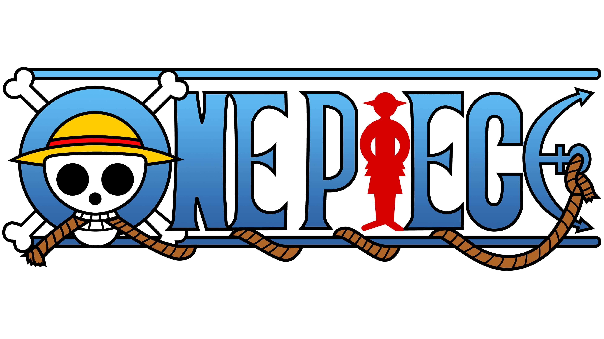
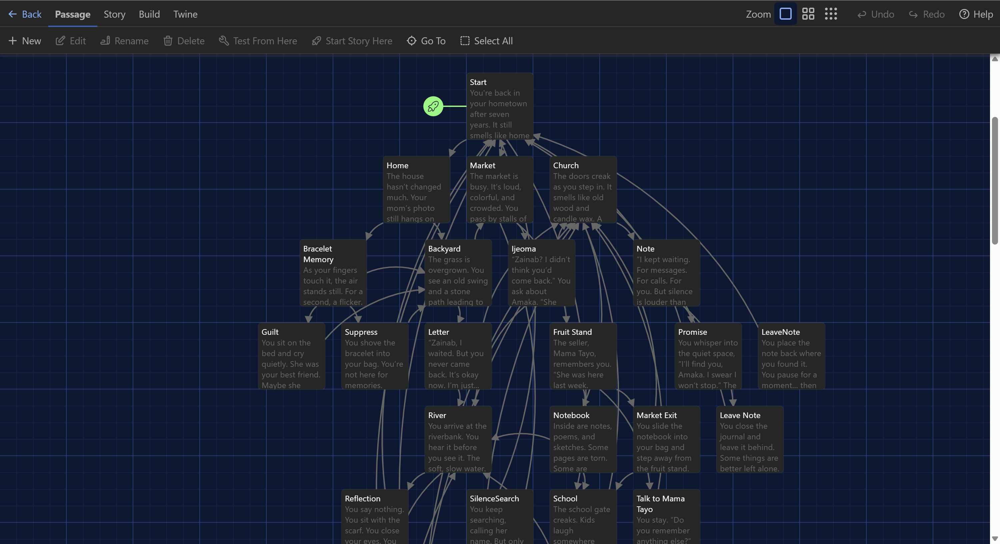
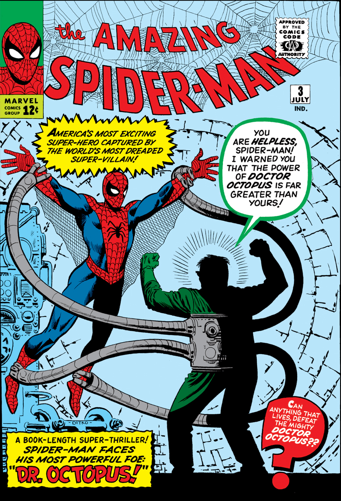
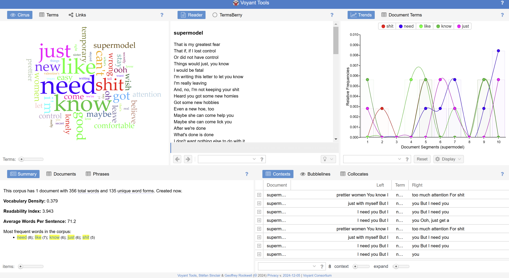
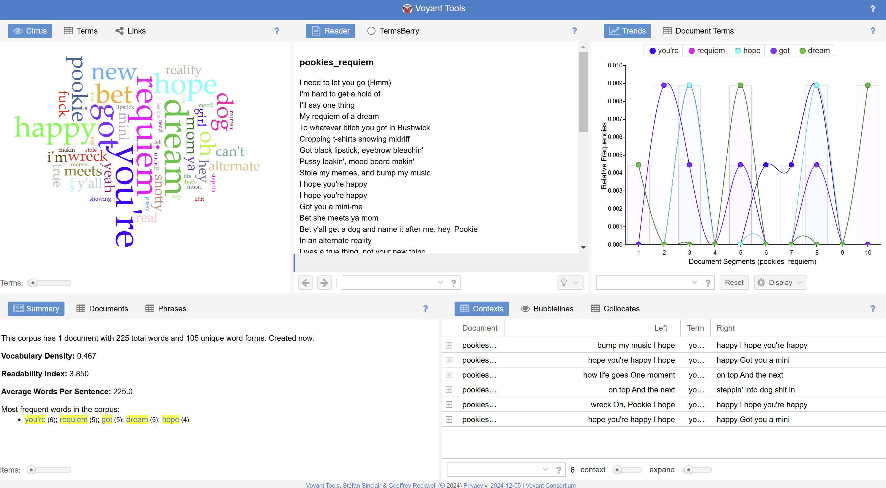
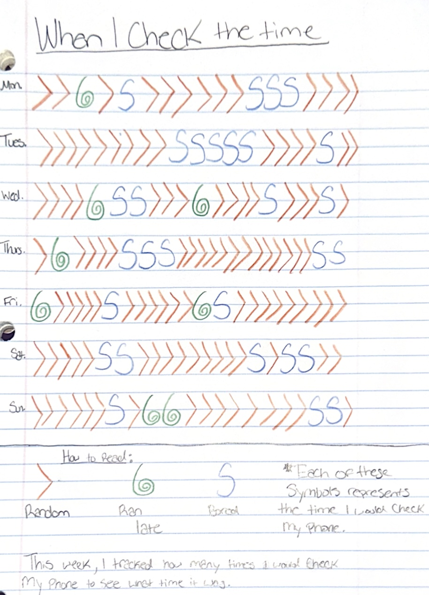

Gallery
One Piece SBS Analysis Project
Created a network visualization to show character relationships and storytelling patterns.

The Space Between Us (Twine)
I made a game using Twine where a girl comes back to her hometown to reconnect with her best friend. As she searches for answers, memories and choices guide her through different paths. Depending on what players decide, the story reveals different endings about friendship, loss, and moving forward.

Spider-Man Markup Project
Created a structured HTML and CSS page showcasing The Amazing Spider-Man comic. Focused on semantic markup, accessibility, and clean visual design.

Thinklink Project
For this project, I worked with a group to make a 3D model of a place on campus and annotate it. We settled on this room in Erie Hall.
View the project here: Thinglink Scene of Erie Hall
Corpus Analysis: SZA’s 'Supermodel' and Sailorr’s 'Pookie’s Requiem'
This project compares two songs — SZA’s Supermodel and Sailorr’s Pookie’s Requiem — to explore how artists use language to express heartbreak, rejection, and self-reflection.


Word Analysis: 'You'
One of the most common words in both songs was “you.” In "Supermodel", SZA uses “you” to directly address her ex, expressing her frustrations and how his actions affected her self-esteem. In "Pookie’s Requiem", Sailorr uses “you” in a more detached way, reflecting on how their ex has moved on and what that means for them.
Word Analysis: 'Dream'
Another interesting word was “dream,” which is repeated several times in "Pookie’s Requiem" but not in "Supermodel". Sailorr uses “dream” to symbolize what could have been in an alternate reality, imagining a version of the relationship where things went differently.
Reflection
After comparing these two songs, I noticed how both artists write about rejection and heartbreak but in unique ways. SZA’s "Supermodel" feels raw and bold, while Sailorr’s "Pookie’s Requiem" is more about mourning and letting go.
Dear Data Project
This project shows a collection of how much I check the time in a week.
